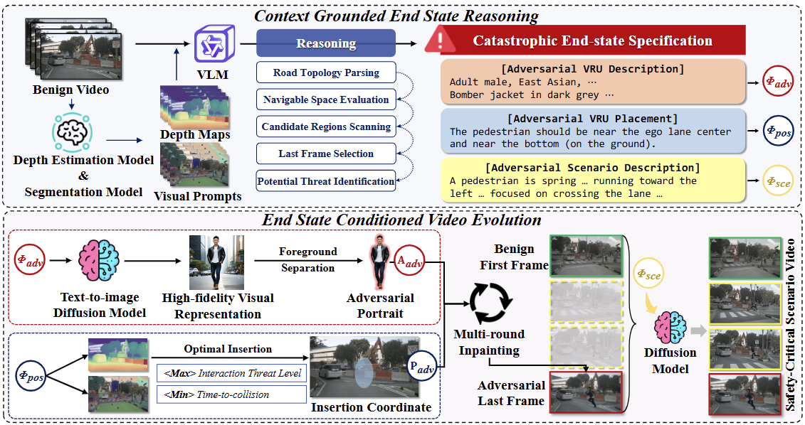
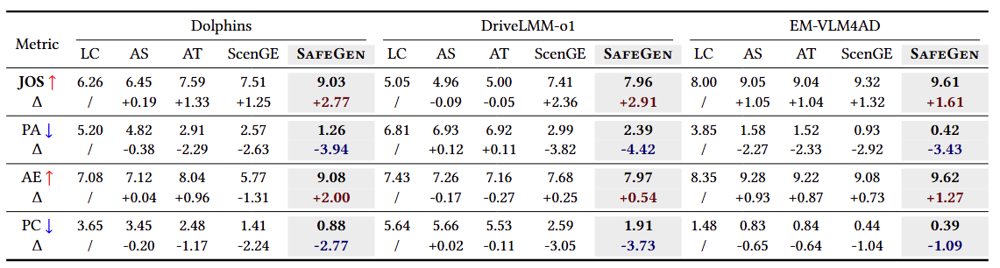

SafeGen: Goal-Conditioned Diffusion for Safety-Critical Video Generation in VLM-Based Autonomous Vehicles
Abstract
Vision-language models (VLMs) are increasingly deployed in autonomous driving (AD) systems, creating an urgent need for rigorous safety evaluation under rare yet safety-critical scenarios. Among these, interactions with vulnerable road users (VRUs), such as pedestrians, represent a major source of real-world failures. However, existing safety-critical scenario generation methods predominantly rely on simulator-based pipelines, which suffer from a substantial sim-to-real gap and often fail to capture realistic, diverse, and unforeseen human–vehicle interaction dynamics. To address this, we present SafeGen, a goal-conditioned diffusion framework for safety-critical scenario generation in vision-language model-based autonomous driving systems (VLMADs). Our key insight is to formulate scenario generation as a goal-conditioned diffusion process, where a predefined catastrophic end-state (e.g., a collision with a pedestrian) serves as a strong supervisory signal, guiding the generation of temporally coherent video trajectories that naturally evolve toward safety-critical outcomes. Building on this formulation, we introduce Context Grounded End State Reasoning, which leverages VLMs to analyze benign driving contexts and infer latent vulnerabilities in human–vehicle interactions, producing structured end-state specifications that induce high-risk scenarios. Conditioned on these targets, we further propose End State Conditioned Video Evolution, which grounds semantic threats into physically plausible visual dynamics. Specifically, we instantiate high-risk agents (e.g., VRUs) within the scene via depth-aware geometric projection, followed by boundary-conditioned diffusion to generate intermediate frames with consistent motion patterns and temporal coherence. Extensive experiments across 3 VLMADs demonstrate that SafeGen increases the Judge Overall Score by 24.25% on average compared to SoTA baselines. Furthermore, fine-tuning a VLMAD with SafeGen-generated data improves performance in real-world driving scenes by an average of 15.9%.

SafeGen leverages a two-stage pipeline to transform benign driving videos into safety-critical scenarios: it first uses a VLM with Set-of-Mark and depth information to reason out a catastrophic "end-state", then employs a diffusion framework to synthesize high-fidelity adversarial agents and a temporally coherent video trajectory that evolves naturally toward the specified accident.
Experiments Results Overview

Main results on the adversarial efficacy for different VLMADs. We report the Judge Overall Score (JOS) along with its sub-metrics. We also report the change in performance (Δ) relative to the baseline. The SafeGen columns are shaded in gray. Improvements and degradations are highlighted in red and blue, respectively.
BibTeX
@article{Anonymous2026SafeGen,
title={SafeGen: Goal-Conditioned Diffusion for Safety-Critical Video Generation in VLM-Based Autonomous Vehicles},
author={Anonymous Author},
journal={Conference/Journal Name},
year={2026},
url={https://anonymous.4open.science/r/SafeGen-0FB6}
}